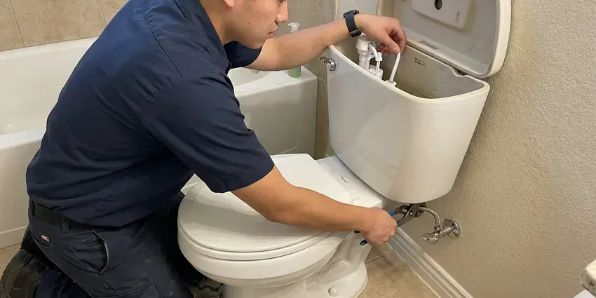
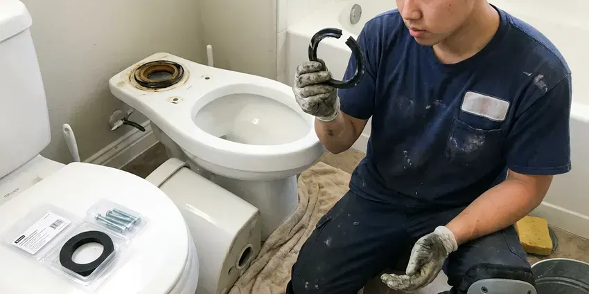
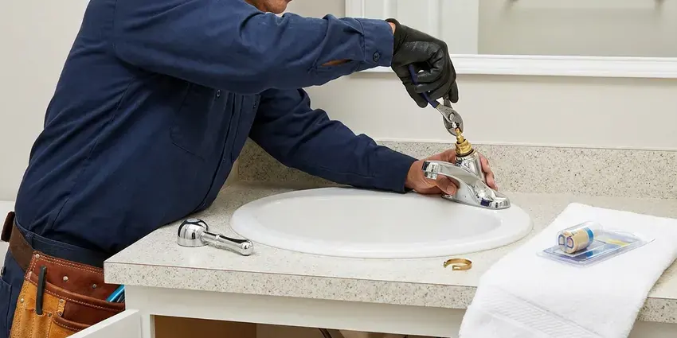
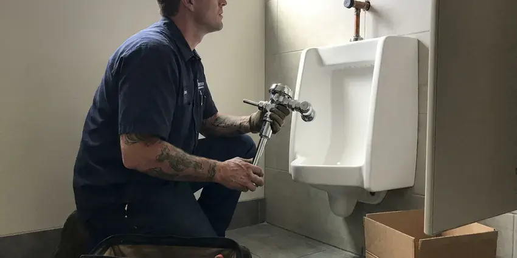

Sink Installation in Lawton, OK
When you need a new sink installed in Lawton, OK, trust JBK Plumbing for prompt, high-quality service that meets all local codes.
- Satisfaction Guaranteed
- New Valves and Supply Lines
- Oklahoma Plumbing Experts
- Fast, Local Plumbers
Upgrade Your Vanity with a Professional Sink Install in Lawton, OK.
Call us with your sink model and we will give you a clear installed price.
Expert Sink Installation for Homes in Lawton, OK
When you choose JBK Plumbing for sink installation in Lawton, OK, you are getting a team focused on quality. We understand the needs of homes in this area, including dealing with varying water pressures and ensuring durable connections. Our goal is to leave you with a perfectly functioning sink that adds to your home's value and usability for years to come.
Our expertise includes:
- Compliance with Oklahoma plumbing codes
- Adjust drain arm height for vessel and pedestal sinks
- Expert drain and faucet connections

Additional Bathroom Plumbing Services in Lawton, OK
From toilets to showers, our bathroom plumbing team in Lawton, OK handles repairs, installs, and upgrades with tidy, code-compliant work.


Toilet Repair service for Lawton homeowners

Professional toilet bowl replacement, Lawton

Local faucet repair by JBK Plumbing, Lawton


Customers
Why Choose JBK Plumbing for Sink Installation in Lawton, OK?
Our team is focused on delivering clean, efficient, and reliable installations, so your new sink performs well for years to come.
- Proper Support, Undermount and vessel sinks are anchored to hold full basins without moving.
- Remodel Friendly, We coordinate timing with cabinet and countertop crews.
- Code Compliance, We carefully follow all Oklahoma plumbing codes for safe and compliant installations, including proper drainage and venting.
Citywide Coverage
We install bathroom sinks throughout Lawton, whether it is a single vanity refresh or a full primary bath remodel. Every neighborhood gets the same scheduling options and the same quality work.
Experienced Team
Our team installs sinks from Kohler, American Standard, Toto, Duravit and many specialty makers. We read the spec sheet before we arrive so the drain, overflow and faucet holes all match.
Safety-First Approach
We strictly follow all Oklahoma plumbing and building codes during every sink installation, ensuring the integrity of your home's plumbing system and preventing potential hazards like leaks or structural damage.
Trusted Certified Lawton Plumbing Services Professionals
At JBK Plumbing, we take pride in providing certified plumbing services throughout Lawton, OK. Backed by leading industry credentials, our experienced plumbers combine technical skill with genuine customer care. Whether it is repair, installation, or maintenance, we follow strict safety and quality standards to deliver long-lasting results you can trust.
Call Us Now PHCC Plumbing Contractor Recognition
PHCC Plumbing Contractor Recognition Better Business Bureau (BBB) Accreditation
Better Business Bureau (BBB) Accreditation Angi Certified Pro
Angi Certified Pro ISO 9001 Quality Management Certification
ISO 9001 Quality Management CertificationReliable Sink Installation Services in Lawton, OK
Sink Installation Cost Factors in Lawton, OK
A simple drop-in swap costs much less than a new undermount on stone or a vessel sink that needs a drain relocation. Moving the drain, adding a second sink or replacing old galvanized stubs adds labor. We price the plumbing separately from the countertop so you can compare. You will know the full installed cost before we begin.

Vessel Sink Installation in Lawton, OK
Vessel sinks sit on top of the counter, which changes the drain height and faucet requirements. We install the mounting ring, set the bowl level, and use a vessel-specific drain with or without an overflow as the basin calls for. We also confirm your faucet is a tall or wall-mount model that reaches past the rim. The trap arm is adjusted so everything lines up under the counter.
Emergency Sink Replacement in Lawton
If an old sink has failed badly, causing leaks or water damage, JBK Plumbing offers emergency sink replacement services. We can promptly remove the damaged unit and install a new sink to restore functionality and prevent further issues. Our rapid response team in Lawton is equipped to handle urgent situations, making sure your home or business is protected.
Faucet & Disposal Integration in Lawton, OK
Often, a new sink installation goes hand-in-hand with a new faucet and garbage disposal. We expertly integrate these components, ensuring all connections are compatible and functioning correctly. From single-handle pull-down faucets to touchless models and powerful disposals, we make sure everything is installed at the same time as your new sink. This combined service saves you time and ensures all parts work together smoothly in your Lawton, OK home.
Commercial Restroom Sink Installation in Lawton
Offices, restaurants and retail spaces need durable lavatories that meet code and stand up to heavy use. We install wall-hung and countertop lavatories, sensor faucets and mixing valves where required. Work is scheduled around your business hours to keep restrooms open. We can also replace several sinks in one visit.
Bathroom Sink Installation in Lawton, OK
Upgrading your bathroom often starts with a new sink. We handle installations for pedestal sinks, vessel sinks, console sinks, and integrated vanity sinks. Our plumbers ensure the new sink fits perfectly with your vanity or wall mounting, providing secure fastenings and precise plumbing connections. We pay close attention to drain assembly and faucet integration, making sure everything is sealed and functions flawlessly, which is especially important in humid bathrooms.
Wall-Mount and ADA Sink Installation in Lawton, OK
Wall-hung sinks need carriers or heavy blocking to meet load requirements. For accessible bathrooms, we set the rim height and knee clearance to ADA guidelines and insulate or shield exposed pipes under the basin. This is common in aging-in-place remodels and small commercial restrooms. We make sure the sink is strong enough to lean on safely.

Double Vanity Sink Installation in Lawton
Adding a second sink means adding a second drain and two more supply lines. We extend the drain with a properly sized fitting, install new stops, and make sure both bowls drain freely without siphoning each other's traps. When the wall needs to be opened, we tell you up front. A double vanity is one of the most requested upgrades in primary bathrooms.
Local Sink Installation Near Me in Lawton, OK
We also know the local housing stock. Newer homes around Lawton typically use PEX supply lines and PVC drains, while older ones may still have galvanized pipe that restricts flow. That helps us predict where drains and stubs sit before we open anything, and fewer surprises means a smoother install day.
When you search for 'sink installation near me' in Lawton, OK, JBK Plumbing is your local, dependable choice. Our team is strategically located to provide prompt service across the entire Lawton area. We understand the plumbing needs of homes and businesses in our community.
JBK Plumbing at a Glance
- Fully licensed plumbing team covering Lawton, OK
- 24/7 emergency service with same-day scheduling
- Clear written estimates, no hidden fees
- 4.8-star rated by 318+ Oklahoma customers
Lawton Map
Lawton Information
- Population
- 90,245
- Area codes
- 580/405/580
- Service area
- Lawton and communities within 40 miles
- Nearby
- Moore, Norman, Oklahoma City, Midwest City
Proper sink installation is essential in Lawton, OK homes to prevent water damage to cabinets and floors. Newer homes around Lawton typically use PEX supply lines and PVC drains, while older ones may still have galvanized pipe that restricts flow.
Expert Services
Trust our professionals for reliable JBK Plumbing solutions in Lawton, OK.
Our Specialized Plumbing Services in Lawton, OK
At JBK Plumbing, we provide a complete range of plumbing services across Lawton, OK. From leak detection to full system installations, our team ensures fast, precise, and affordable service for both residential and commercial properties. Explore our core services below:


How Our Sink Installation Process Works in Lawton, OK
We follow a clear approach to ensure your new sink is installed correctly and functions perfectly from day one.
Request a Quote
Call (405) 507-8396 or fill out our online form to schedule an appointment. We will discuss your sink installation needs and provide a clear, upfront estimate.
On-Site Assessment
Our plumber will visit your Lawton home to assess the existing setup, take measurements, and confirm the right approach for your new sink installation.
Professional Installation
We carefully remove your old sink, install the new unit, connect all plumbing, and test for leaks. We make sure everything is clean and functional before we leave.
Frequently Asked Questions About Sink Installation in Lawton
The cost of sink installation in Lawton, OK generally ranges from $200 to $600, depending on the type of sink, complexity of the installation, and any necessary plumbing modifications. This usually includes labor but not the cost of the sink itself. For a precise estimate, it's best to get a custom quote from JBK Plumbing.
Signs you may need a new sink include extensive cracking or chipping, widespread rust, persistent leaks that cannot be sealed, significant water damage around the sink basin, or if you are upgrading your home's look. Small leaks or minor clogs can often be repaired, but widespread damage usually warrants replacement.
JBK Plumbing can install a broad variety of sinks, including kitchen sinks (undermount, drop-in, farmhouse, bar), bathroom sinks (pedestal, vessel, console, integrated), and utility sinks. We handle installations for all standard residential and commercial settings.
Generally, replacing an existing sink with a similar type does not need a permit in Lawton, OK. However, if the installation involves relocating plumbing lines, adding new lines, or significant structural changes, a permit might be necessary. We will let you know if your project requires one and can assist with the permit application process.
Yes. We often work with fabricators who cut the hole and mount the bowl, then we complete the drain and supply connections. We can also mount the bowl ourselves.
Most standard sink installations can be completed within 2 to 4 hours, assuming no major plumbing modifications are required. More complex installations, such as those requiring new water lines or drain rerouting, might take longer. We will give you an estimated timeframe during our first assessment.
Many vessel sinks have no overflow, so the drain must be a non-overflow type, or air will not flow freely. We match the drain to the bowl to prevent this.
We guarantee our installation labor, and the sink and drain carry the manufacturer's warranty. Details are listed on your invoice.
What People Are Saying About Our Plumbing Experts?

Robert G.
The trenchless sewer replacement saved our front yard. They walked us through the camera inspection footage first so we knew exactly what we were paying for.
Sewer Line Replacement · Midwest City, OKJames P.
Our commercial plumbing system had a leak under the sink, and JBK Plumbing handled it professionally. The plumbers arrived quickly and restored everything without disruption to our customers.
Commercial Plumbing · Lawton, OK
Daniel K.
A pipe burst at 11 pm and they actually answered. The plumber showed up within the hour, shut everything down, and had us back to normal the next morning. Could not ask for more.
Emergency Plumbing · Oklahoma City, OK
Emily R.
I called JBK Plumbing for plumbing repair, and the technician was fast, polite, and thorough. They explained the problem clearly and fixed it the same day. I will definitely hire them again. Highly recommended!
Plumbing Repair · Lawton, OK
Sofia M.
Two new toilets installed in one visit, no mess left behind, and the tech even adjusted a faucet he noticed was dripping. Fair pricing and really friendly.
Toilet Installation · Moore, OK
Patricia H.
We had a slab leak that two other companies could not find. JBK Plumbing located it in under an hour, explained our options, and the price matched the quote to the dollar.
Slab Leak Repair · Oklahoma City, OK